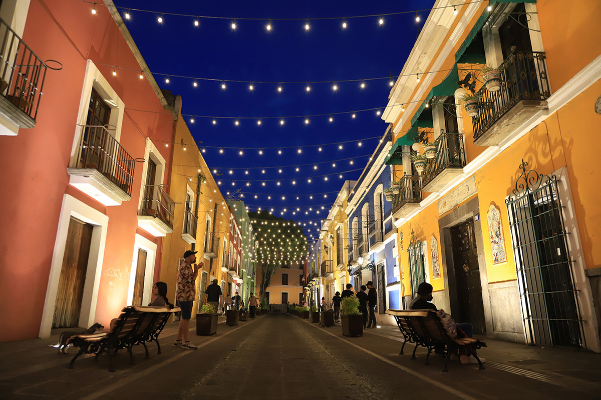

Lugares Sociales en Puebla
Zócalo de Puebla
El corazón de la ciudad, ideal para pasear y disfrutar de eventos culturales.
Más información

Callejón de los Sapos
Un pintoresco callejón lleno de tiendas de antigüedades y cafés.
Más informaciónEl Parián
Un mercado de artesanías donde puedes encontrar productos típicos de la región.
Más informaciónPaseo Bravo
Un parque histórico ideal para caminar, hacer ejercicio y disfrutar de la naturaleza.
Más informaciónEstrella de Puebla
Una rueda de la fortuna gigante que ofrece vistas panorámicas de la ciudad.
Más informaciónTeleférico de Puebla
Disfruta de un recorrido aéreo con vistas espectaculares de la ciudad y sus alrededores.
Más información